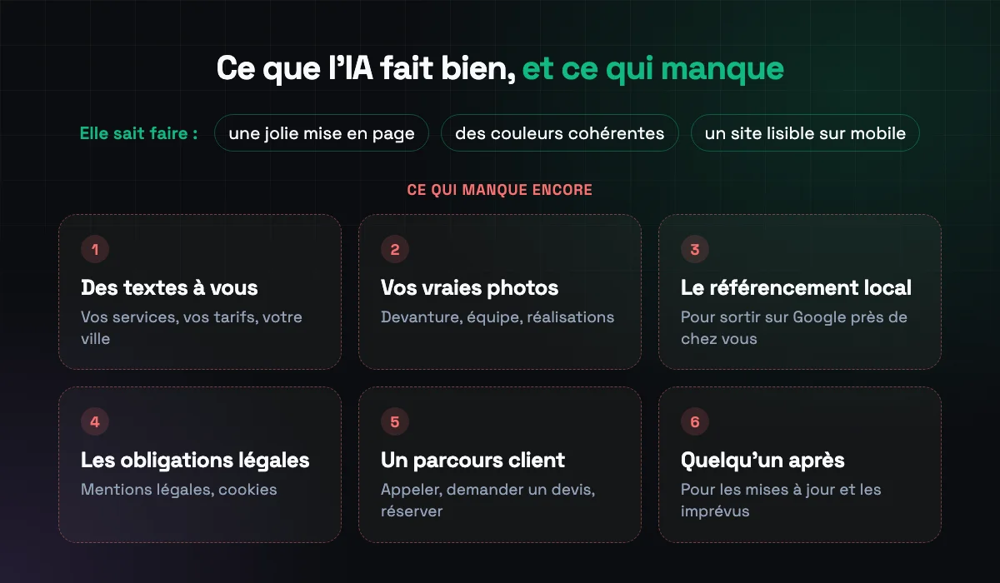
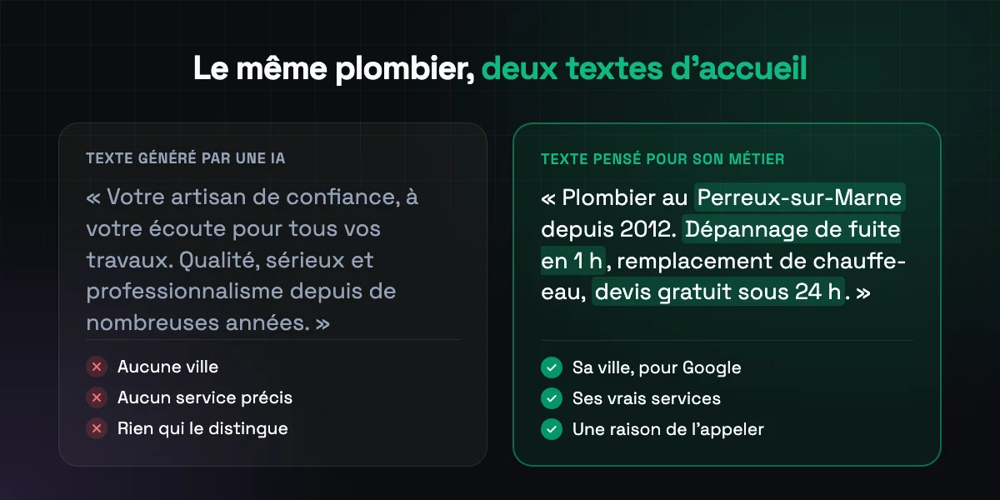

Au sommaire
1. Ce que l'IA fait bien
Soyons honnêtes : le résultat est souvent propre. Les générateurs savent produire une mise en page moderne, une palette de couleurs cohérente, des sections bien ordonnées (accueil, services, à propos, contact) et un site qui s'affiche correctement sur téléphone.
Pour se faire une idée, tester un nom ou une ambiance, c'est rapide et peu coûteux. Le problème n'est pas l'apparence. C'est tout ce qui ne se voit pas au premier coup d'œil.
2. Les 6 choses qui manquent

Des textes qui ressemblent à tout le monde
« Votre artisan de confiance, à votre écoute depuis des années. » L'IA écrit des phrases correctes, mais génériques : elle ne connaît ni vos spécialités, ni vos tarifs, ni ce qui vous distingue du concurrent de la rue d'à côté. Or c'est exactement ce que le client cherche, et ce que Google met en avant.

Des photos qui ne sont pas les vôtres
Images de banque ou générées : elles sont jolies, mais le client le sent. Une vraie photo de votre devanture, de votre équipe ou d'un chantier terminé inspire bien plus confiance qu'un plombier souriant qui n'existe pas.
Le référencement local
Pour apparaître quand quelqu'un tape « boulangerie Nogent-sur-Marne », il faut des pages qui parlent de votre ville et de vos services, des balises bien remplies, des données structurées pour Google et un lien solide avec votre fiche Google. Les générateurs s'en occupent peu, ou pas du tout. Nous l'expliquons en détail dans notre guide du référencement local.
Les obligations légales
Un site professionnel doit afficher des mentions légales et, s'il utilise des cookies de mesure ou de publicité, demander le consentement des visiteurs. Ce n'est ni joli ni amusant, donc rarement généré correctement. C'est pourtant obligatoire.
Un parcours pensé pour le client
Un bon site guide le visiteur vers une action : appeler, demander un devis, réserver. Où placer le bouton, quelles informations donner avant, comment rassurer : ces choix dépendent de votre métier. Un plombier qu'on appelle en urgence n'a pas besoin du même site qu'une fleuriste qui prépare des mariages.
Quelqu'un pour s'en occuper après
Le site est en ligne, et ensuite ? Changer des horaires, ajouter une photo, réagir quand le formulaire ne marche plus. Avec un générateur, c'est à vous de le faire. Et le site reste souvent lié à la plateforme : si vous voulez partir, vous ne pouvez pas toujours l'emporter.
3. Quand un site fait par IA suffit
Il y a des cas où c'est une bonne solution :
- Une page temporaire pour un événement, une ouverture ou un projet à tester.
- Un tout début d'activité, pour avoir une adresse à donner en attendant mieux.
- Une activité qui ne compte pas sur internet pour trouver ses clients, où le site sert juste de carte de visite.
En revanche, si vous voulez que des inconnus vous trouvent sur Google et vous contactent, le site doit être pensé pour votre activité. C'est là que l'humain fait la différence.
4. Comment nous utilisons l'IA
Nous ne sommes pas contre l'IA, au contraire : nous l'utilisons pour aller plus vite sur certaines tâches. C'est d'ailleurs une des raisons pour lesquelles nous livrons un site en 2 semaines.
Mais la structure du site, les textes, le choix des photos et le référencement partent de votre activité, de vos clients et de votre ville. Et tout est relu et vérifié par un humain avant la mise en ligne.
5. Questions fréquentes
Un site créé par une IA est-il bien référencé sur Google ?
Pas automatiquement. Google ne pénalise pas un texte parce qu'il a été écrit par une IA, mais il met en avant les pages utiles et précises. Un texte générique a peu de chances de ressortir face à vos concurrents.
Peut-on partir d'un site fait par IA et le faire améliorer ?
Oui, mais beaucoup de générateurs ne permettent pas d'exporter le site. En pratique, on garde surtout les idées de structure et de couleurs, puis on reconstruit.
Virtuos Studio utilise-t-il l'IA ?
Oui, comme outil. Mais tout ce qui compte pour vos clients est pensé pour votre activité et relu par un humain.
Comparez par vous-même. Nous créons gratuitement la page d'accueil de votre site, avec vos vrais services et votre ville, avant que vous payiez quoi que ce soit.
Recevoir ma maquette gratuite Voir les tarifs